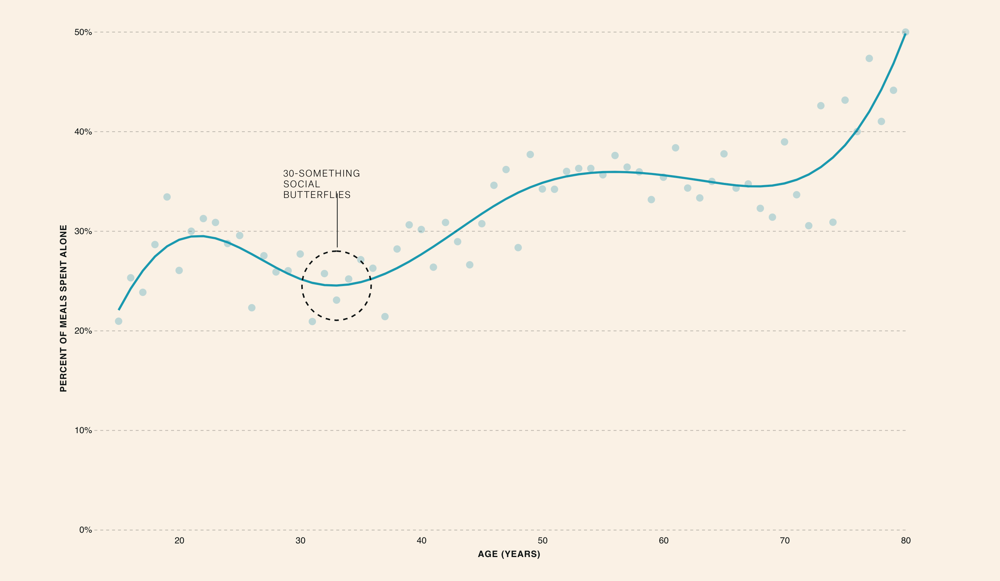
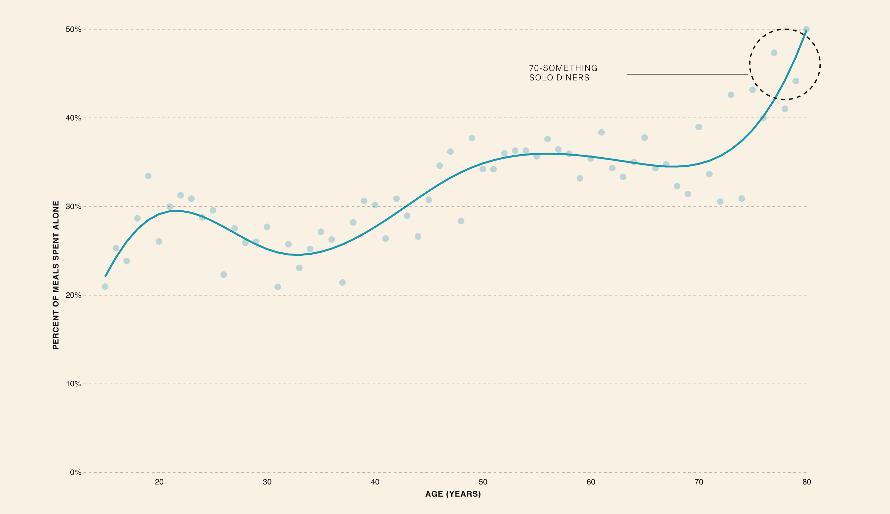
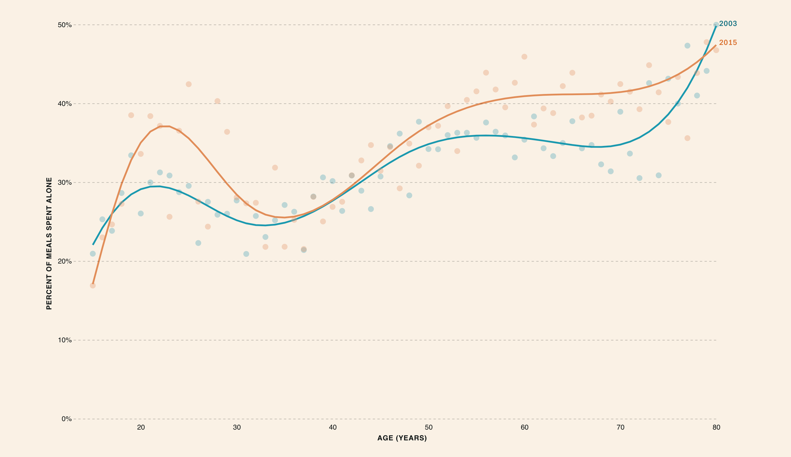

Who are you having dinner with tonight? Perhaps you mustered the courage to ask your crush on a date? Or maybe your meal is more family stock-photo-esque, complete with smiling children eating all of their veggies without question. Or are you having dinner by yourself? Before you go off tweeting about being #ForeverAlone, you should know that eating alone is becoming more and more common.
In 2003, the tens of thousands of people who took part in the American Time Use Survey — a representative sample of Americans aged 15 to 85 — reported that they ate 32% of their meals alone. As the survey-takers continued collecting data over the years, that number rose to 35% in 2015.
A three percent increase doesn’t sound like that much. But it does translate to the average American eating alone one extra day per month. And, as you might guess, that extra day is not distributed evenly throughout the population.
Generally speaking, as we get older, we eat alone more and more frequently. But there are a few interesting things worth noting here.
Frequency of dining alone by age
First, look at this dip for people in their 30’s. These folks were eating noticeably fewer meals alone per month than people just a decade younger than them.
I also noticed that once people hit 70 years old, they experienced a steep upward trend in solitary eating. Though, these data are from 2003 and a lot has changed in the 12 years between that survey and the most recent one from 2015.
Once I added the data from 2015, the patterns really caught my attention. It looks like millenials and baby-boomers finally have something in common. Both groups have begun eating alone more frequently than people their age did back in 2003. On the other hand, the dining habits of the other age-groups remained relatively unchanged.
I decided to slice the population into five age groups: 15 - 19, 20 - 30, 30 - 50, 50 - 75, and 75 - 85. These correspond to roughly alternating groups of no change / change in dining habits. Looking at the data this way, you may notice that these curves seem to follow the archetypal family life: living with parents, moving out, starting a family, having kids, empty nests, and growing old together. I wanted to see if there was more to this hypothesis.
To figure it out, I added data that reports with whom people share their meals. I hoped that this would help me figure out if the patterns observed from lone-diners do, in fact, match up with this quintessential American lifestyle. Below, you’ll see the change in dining companions for each age group from 2003 to 2015.